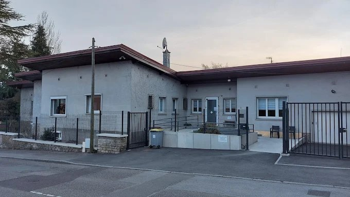
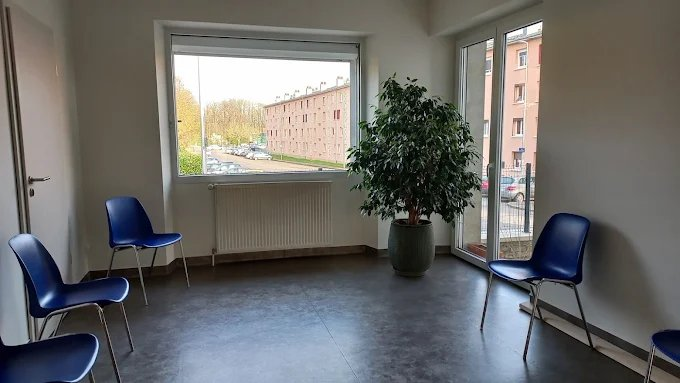
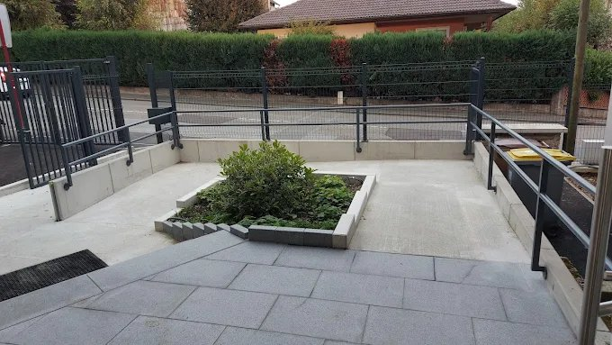
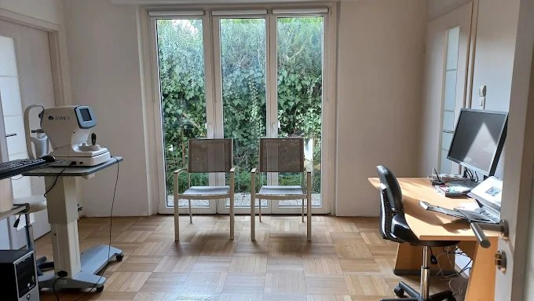

Venir au cabinet
Accès
2 rue du Peintre Baumann, 90000 Belfort
À l'angle de la rue Noël Lapostolest
P
En voiture
Des places de stationnement se trouvent juste en face du cabinet, rue Noël Lapostolest. Traversez la rue du Peintre Baumann : vous y êtes en 1 minute.
B
En bus (réseau Optymo)
- Guidon · 2 min à pied5
- Liberté Follereau · 3 min35851
- Madrid / Liberté Madrid · 4 min12439
Lignes relevées en novembre 2026. Horaires et itinéraires sur optymo.fr.
♿
Accès facilité
Cabinet de plain-pied, avec une rampe d'accès pour les fauteuils roulants et les poussettes.




